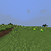

Chapitre 10
La piste apprise a été testée : elle non plus ne suffit pas — mais elle élimine deux explications
Prérequis : Qu'est-ce que JEPA, et pourquoi apprendre à un programme à jouer à Minecraft avec ça ?, Le raccourci que le modèle essaie toujours de trouver (et comment on l'en empêche), Apprendre au modèle à imaginer la suite, Essayer 512 avenirs dans sa tête avant d'appuyer sur un bouton, Le grand saut vers le vrai Minecraft : quatre échecs, puis un agent qui coupe des arbres, Apprendre à fabriquer : la règle est comprise, le premier arbre reste hors de portée, La curiosité en panne, puis deux rustines qui marchent à moitié, Le mur est comportemental : une vraie première réussite, puis quatre preuves qu'affiner le signal ne suffit pas — et une cinquième qui confirme le diagnostic et Après les pistes A et C : la politique apprise a été promue, puis testée (suite au Chapitre 10)

Piste débutant
Là où on en était
Le Chapitre 9 se terminait sur une promotion : après que deux idées bon marché (des gestes tout faits dans le menu, une manœuvre de croisière) aient échoué sans faire avancer le score, la piste qui restait — entraîner une petite fonction qui apprend les bons gestes plutôt que de les écrire à la main — devenait la priorité numéro un. Ce chapitre raconte ce qui s'est passé quand cette piste a enfin été construite et testée pour de vrai.
Ce qui a été construit
L'idée : au lieu de proposer au planificateur (Chapitre 4) des histoires tirées au hasard, ou un petit menu figé de gestes écrits à la main (Chapitre 8), on entraîne une fonction qui a regardé des milliers d'images des parties d'experts (celles déjà utilisées ailleurs dans le projet) et des épisodes de couverture aléatoire du Chapitre 7 (ceux qui montrent, eux, de vraies situations « perdu, en train de chercher »). Cette fonction apprend à prédire : à partir de ce que l'agent voit maintenant, quelle action un joueur choisirait probablement ensuite.
Point important, déjà annoncé au Chapitre 9 : cette fonction ne décide jamais de l'action finale. Elle se contente de glisser ses meilleures suggestions dans le tas de 512 histoires imaginées que le planificateur continue de juger et de corriger à chaque tour — exactement le même principe que les méthodes de jeu très reconnues évoquées au chapitre précédent (celles qui ont battu des champions humains aux échecs et au Go) : une intuition apprise propose des coups, une recherche explicite les vérifie.
Une vérification refusée : l'honnêteté du projet à l'œuvre
Avant de faire confiance à cette fonction, il fallait vérifier qu'elle n'avait pas fait ce que ce projet redoute depuis le tout premier chapitre : s'effondrer sur une seule réponse toujours identique, quelle que soit l'image montrée (le piège du « collapse », Chapitre 2 — ici appliqué à une politique d'action plutôt qu'à une représentation visuelle).
Deux versions ont été entraînées pour tester ça. La version prévue (parties d'experts + épisodes de couverture mélangés) a passé le test : ses prédictions restent variées, et elle devient nettement plus hésitante — elle propose un éventail d'actions plus large — sur les images qui ressemblent à « perdu, en train de chercher » que sur celles qui ressemblent à une scène d'expert bien en face d'un arbre. Une deuxième version, entraînée uniquement sur les parties d'experts (sans les épisodes de couverture), a en revanche échoué au test : elle avait appris à presque toujours répondre « attaque », exactement la faiblesse que le Chapitre 9 redoutait à l'avance. Le programme d'entraînement a refusé d'enregistrer cette version défaillante — la même discipline que dans tout le reste du projet : un outil qui échoue à son propre test n'est jamais gardé sous prétexte qu'il a quand même tourné.
Le test en direct : toujours zéro
Sur 8 épisodes, avec cette fonction en place : 0 bûche coupée, récompense nulle. Comme pour les tentatives précédentes à cette taille d'échantillon, ce chiffre seul ne prouve rien de définitif — mais il ne montre non plus aucun signe positif à se raccrocher.
Ce que ce résultat élimine réellement
Le zéro en lui-même n'est pas la partie la plus intéressante. Deux choses précises ont pu être vérifiées, et éliminées, grâce à ce test :
- Pas de verrouillage sur un seul geste. Contrairement au Chapitre 8, où l'agent se figeait sur une seule action jusqu'à 100% du temps dans plusieurs épisodes, ici la répartition des actions reste variée sur les 8 épisodes (l'action la plus fréquente occupe entre 16% et 54% du temps, jamais plus). La fonction apprise fait bien ce pour quoi elle a été construite : proposer un menu de gestes divers, pas un menu étroit sur lequel l'agent se fige.
- Pas de point de départ impossible à gagner. Un nouvel outil de diagnostic (annoncé comme plan au Chapitre 9, construit depuis) confirme que, dans les 8 épisodes, quelque chose de pertinent était visiblement présent à un moment ou un autre — largement au-dessus du seuil minimal calibré. Ce lot ne peut donc pas être expliqué par « le point de départ rendait le succès impossible dès le début », contrairement à certains épisodes des chapitres précédents.
Le nouveau suspect
Une source de propositions vraiment variée, entraînée correctement, testée sur des points de départ confirmés jouables — et toujours zéro succès. C'est le résultat négatif le plus net de toute cette enquête, pas juste un zéro de plus : la piste B était la réponse la plus « logique » au diagnostic du Chapitre 8 (« le problème, c'est la génération des gestes candidats »), et elle n'a pas fait bouger le résultat.
Ça pousse le diagnostic un cran plus loin, vers une nouvelle hypothèse — pas encore confirmée, seulement posée : peut-être que le problème n'est pas la diversité des gestes proposés, mais la façon dont le monde imaginé lui-même juge ces propositions dans une situation qu'il connaît mal. Le modèle qui note les histoires imaginées a surtout appris sur les parties d'experts, où un arbre est presque toujours garanti dans le champ de vision. Face à un vrai point de départ aléatoire — sans cette garantie, avec un angle de caméra quelconque — peut-être qu'il évalue mal même de bonnes propositions, un peu comme un joueur d'échecs entraîné presque uniquement sur des ouvertures classiques qui se retrouve à mal juger une position rare et inhabituelle, même si sa façon de réfléchir reste, par ailleurs, saine.
La suite
Avant de dépenser davantage de temps d'entraînement sur une nouvelle réparation, la prochaine étape est plus simple : regarder attentivement les images enregistrées de ces 8 épisodes — voir concrètement ce que l'agent fait sur un point de départ confirmé jouable qui échoue quand même à se transformer en bûche coupée. Un regard qualitatif avant un nouveau chantier coûteux, exactement la même discipline que le reste du projet.
Piste expert
Contexte
Le Chapitre 9 a promu la Proposition B (a priori de politique latente entraîné par
clonage comportemental) au rang de priorité 1, après que les Propositions A+C
(Chapitre 8, attempt #8) aient confirmé sans résoudre le diagnostic « mur
comportemental ». Ce chapitre couvre l'attempt #9 de CLAUDE.md (Phase
5+) : Proposition B construite, vérifiée, et évaluée en direct.
Ce qui a été construit
mine_jepa/ebwm/actor.py::BCActor : un petit MLP classifieur sur les
latents figés de ebwm.pt, entraîné par
scripts/train_actor_bc.py avec un gate anti-collapse obligatoire (refuse
l'enregistrement en cas d'effondrement). Entraînement sur les démos Treechop + les
épisodes de couverture de l'attempt #3, pour mélanger du comportement de recherche
authentique aux démonstrations d'experts (le piège identifié au Chapitre 9 : un actor
entraîné uniquement sur Treechop apprendrait « toujours attaquer l'arbre visible »).
Câblage dans _sample_actions() via planner.actor_prior
(config-gated), vérifié bit-for-bit identique à l'ancien échantillonneur quand
désactivé — confirmé par un run réel à seed fixe, pas seulement affirmé par
analogie avec les autres changements config-gated du projet. Une
vérification d'atteignabilité indépendante montre que les candidats de l'actor
gagnent effectivement l'argmax du planificateur sur 6 tirages sur 40 (contre un taux
de base de 25% à tirage uniforme) — présent dans le flux exécuté, pas du code mort
silencieux, sans pour autant dominer.
Le gate anti-collapse : discriminant, avec un vrai échec refusé
-
Actor avec couverture (celui utilisé pour l'évaluation) :
val_acc0,483, entropie moyenne 1,296 nats (sur un maximum de 2,833 nats) → PASS. -
Ablation Treechop-seul :
val_acc0,587, entropie 1,102,top_action_frac0,964 → FAIL, checkpoint correctement refusé.
Ce contraste confirme que les données de couverture étaient réellement porteuses pour le gate, pas décoratives : sans elles, l'actor se serait effondré vers une politique dégénérée (dominée à 96,4% par une seule action).
Résultat en direct
N=8, seed 0, configs/play_craft_commit4_actor.yaml, notation
goal-centroid uniquement (aucun signal de distance non plat disponible à ce stade —
voir plus bas). 0/8 bûches, récompense nulle. Fisher exact
unilatéral contre le taux de base pooled commit_length=4 seul (3/31 ≈
9,7%) : p ≈ 0,21 — non significatif à ce N.
Ce que ce résultat élimine, précisément
- Pas de verrouillage. Concentration d'action sur les 8 épisodes : pic entre 16% et 54%, dans toute la plage — rien qui approche le 83-100% de verrouillage quasi total observé à l'attempt #8 sur trois épisodes sur huit. Le mécanisme actor-prior fait ce pour quoi il a été conçu : proposer un menu de candidats varié et non dégénéré.
-
Pas de spawn invivable. Le diagnostic de viabilité du spawn
(construit en suivi de l'attempt #8,
spawn_diagdansscripts/play_craft.py) confirme que les 8 spawns étaient mesurablement viables :max_chop_stdentre 0,017 et 0,047, confortablement au-dessus du seuil calibré de 0,005. Ce lot ne peut donc pas être expliqué par « le point de départ rendait tout succès impossible », contrairement à certains épisodes antérieurs.
Diagnostic affiné : un nouveau suspect, pas encore confirmé
C'est le résultat négatif le plus net de la campagne, pas un zéro de plus. Une source de propositions authentiquement diverse, non effondrée, entraînée sur des démonstrations d'experts et de la recherche authentique, testée sur des spawns démontrablement viables — et toujours zéro succès. La Proposition B était la réponse « correcte » au diagnostic du Chapitre 8 (« le mur est comportemental, réparer la génération d'action ») et elle n'a pas fait bouger le résultat.
Ceci pousse le diagnostic standing un cran plus loin : le goulot d'étranglement n'est
peut-être pas la diversité de ce qui est proposé, mais
l'évaluation par le monde imaginé de ces propositions sous la
distribution visuelle de cold-start de MineRLObtainIronPickaxeDense-v0
(spawn aléatoire, pose de caméra arbitraire, aucune garantie de forêt) — une
distribution sur laquelle ebwm.pt n'a jamais été entraîné à noter
correctement, contrairement à celle, garantie-forêt, de Treechop. Pas encore
testé directement ; signalé comme hypothèse suivante, pas encore comme fait
établi.
Rappel : deux pistes complémentaires du Chapitre 9 déjà closes avant ce test
-
Réparation photométrique de la métrique de distance entraînée (attempt
#7) : implémentée (
augmentation.color_jitterdansscripts/train_value_projector.py). Le gate offline de séparation tient toujours (8,7× contre 7,9× à l'attempt #7). Mais la cible réelle — la confusion avec la luminosité — empire au lieu de s'améliorer sur une mesure isolée plus propre : corrélationr=0,117(attempt #7, sans augmentation) →r=0,498(avec augmentation). NO-GO — la confusion est vraisemblablement ancrée dans l'espace latent figé deebwm.ptlui-même (Treechop, majoritairement diurne), pas introduite par l'entraînement du projecteur ; perturber seulement les entrées du projecteur ne peut pas défaire un raccourci que l'encodeur amont a déjà pris.checkpoints/value_projector_colorjitter.ptgardé pour comparaison, non utilisé dans l'évaluation ci-dessus — d'où la notation goal-centroid seule pour l'attempt #9. - Diagnostic de viabilité du spawn : construit et déjà utilisé ci-dessus (voir « ce que ce résultat élimine »), pas seulement planifié.
Prochaine étape
Avant tout nouveau chantier d'entraînement : inspection qualitative du GIF
(assets/agent_play_craft_commit4_actor.gif) et des vignettes de spawn
(assets/spawn_thumbs/) — comprendre visuellement ce que l'agent fait sur
un spawn confirmé viable qui ne se convertit toujours pas en coupe, avant de décider
quel correctif tester ensuite.
Achievement : le négatif le plus net de la campagne — deux explications de plus éliminées
Une source de gestes candidats entraînée, mesurablement variée et non effondrée, testée sur 8 points de départ confirmés jouables — et toujours 0 bûche, récompense nulle. Le zéro ne prouve rien à lui seul, mais ce lot élimine concrètement deux explications concurrentes (le verrouillage comportemental du Chapitre 8, un spawn invivable) et déplace le diagnostic vers une nouvelle hypothèse, pas encore confirmée : peut-être que le monde imaginé lui-même juge mal des situations qu'il a rarement vues à l'entraînement.